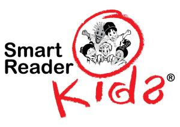
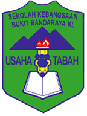
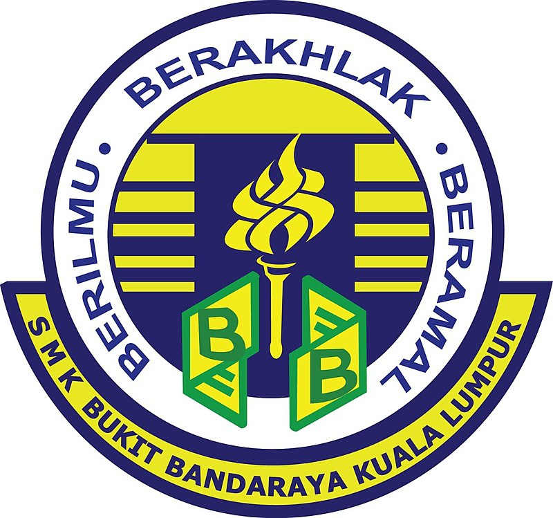

EDUCATION
Like the other person, I also study well in my life. I was supported by my family, especially my parents. This can encourage me to continue further study. I am grateful because they raised me with a lot of education. I try to do my best, even though I have suffered in my life about studying.
However, to be an educated human and knowledgeable, it keep going withb my study in my life even it hard to hold it. Everyone has their own idol that make their spirit level high. As for me, Vice Chancellor of UiTM inspires me because I wanted to become a Vice Chancellor in a University.
| HOMPAGE | ABOUT ME | EXPERIENCE | EDUCATION | MY FAMILY | GALLERY | SOCIAL MEDIA |
I have been study about 16 years since I was at 5. I learn and still learn until now. it helps me to be more educated and sometimes i like to read. same as my hobby, i like to read the news that happened to our country Malaysia, new trending cars and much more. since that, it helps me to explore more about values of knowledge.
| KINDERGARTEN | PRIMARY SCHOOL | SECONDARY SCHOOL | UNIVERSITY |
|---|---|---|---|
| SRK | SKBB | SMKBB | UiTM CK |
| 
click here |

click here |

click here |

click here |
| I started kindergarten school when I was 5. It's been 2 years since 2007-2008. | Here is where I use my time to meet friends and play with them during class. It was a great memory from childhood. I also sat my UPSR here in 2014. | In this school, I learn a lot about how to appreciate our friends.They are truly useful. I just hope that I can meet them again. | Here is where I learn how to be brave and independent. This is because I am not taking the same course as my friends. In addition, I also made a lot of new friends here, and I feel great. |
Below is some song that I sing during I study
Smart Readers Kids Song
SMK Bukit Bandaraya Song
UiTM Song